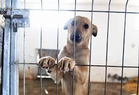

Rocky
Rocky is all current with his shots and physical. He is in excellent shape. Has a skin tag but vet says nothing to worry about. Whoever ends up with him will not be disappointed.
Charlie
We got Charlie when he was 8 weeks old. He’s timid, nervous. He’s more of a two person family (adults) not great with small kids even tho raised with 6 kids. He’s protective of his kids only. He used to go to daycare with other dogs a few times a week over a year ago. He loves car rides!